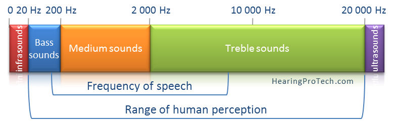

Explicació dels codis de Coldpaly
En aquesta web transformem el so en color
Els sons que podem sentir els humans son ones complexes que es repeteixen entre 20 vegades per segon (20 hz= 20 hertz) i 20.000 vegades per segon (20.000 hertz = 20.000 hz = 20 khz)
